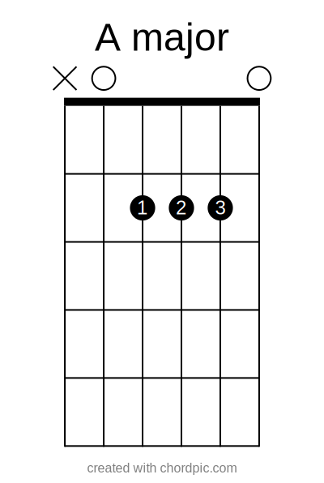
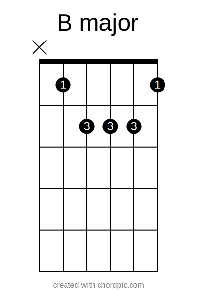
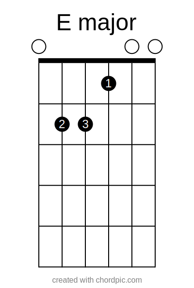
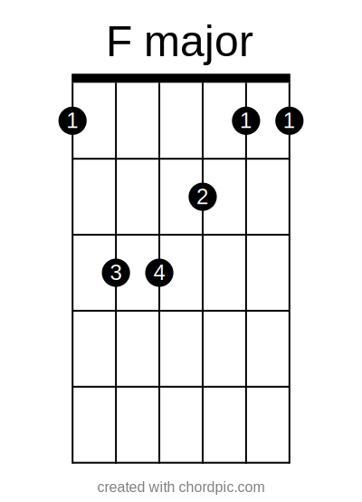
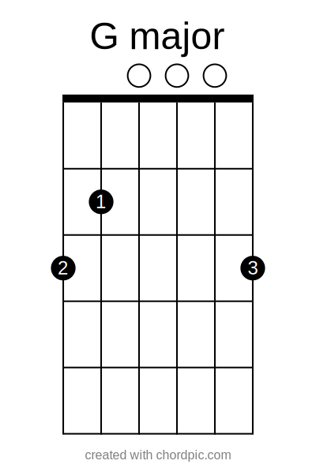

Guitar Chord Checker







Major Guitar Chords
Play your guitar
Hit the mic button then play your guitar to test if it is the accurate chord!
Correct
you are playing the right chord
Incorrect
you are playing the wrong chord


Minor Guitar Chords
Play your guitar
Hit the mic button then play your guitar to test if it is the accurate chord!
Correct
you are playing the right chord
Incorrect
you are playing the wrong chord